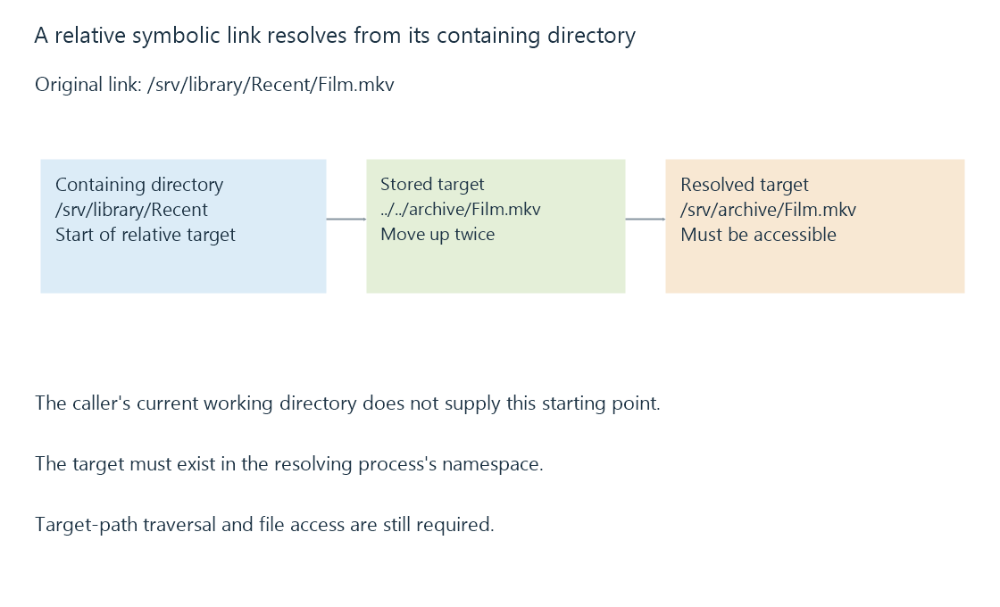

Symbolic links and target-path resolution
A symbolic link stores a target pathname that is resolved when accessed, allowing indirection across directories or file systems.
A symbolic link is a directory entry whose content names another path. Accessing it normally continues pathname resolution at that target. Unlike a copy, the link does not store another complete set of the movie's bytes.
A link can point across file-system boundaries, and it can exist even when its target is absent.
A relative target begins beside the link
Consider this original layout:
Link location: /srv/library/Recent/Film.mkv
Stored target: ../../archive/Film.mkv
Resolved path: /srv/archive/Film.mkv
The target starts from /srv/library/Recent, the link's containing directory. It does not start from the caller's current working directory. An absolute target instead starts from the root visible to the resolving process.

Moving a relative link to another directory can change what it resolves to. Moving the target without updating the link can leave the old target name dangling.
A visible link is not evidence of accessible content
| Link observation | What the operation still needs |
|---|---|
| The link entry exists | A resolvable target |
| The target exists elsewhere | The target must exist in this process's namespace |
| The link's directory can be listed | Search/traversal rights along the target path |
| The target name is correct | Permission to open the target file |
On Linux, the ordinary permission bits on the symbolic link itself are not the regular-file access gate; the target and directory resolution checks matter. Link ownership and specialized protections can still affect particular operations.
Windows also has symbolic links and other reparse-point mechanisms, including junctions. Those mechanisms have their own creation, target and platform rules; a junction is not merely another spelling for every kind of symbolic link.
The link changes the tree a scanner encounters
A linked directory can lead outside the apparent library root or back into a location already visited. Scanner behavior must account for supported link traversal, cycles and repeated paths. The existence of an operating-system link does not establish how a particular application's scan treats it.
For Emby, verify that the supported library arrangement reaches the intended target under the server identity. The same link can work on the host and fail inside a container where its absolute target path is not mounted. Hard links avoid target-path indirection but have a different same-file-system boundary.
See Also
- Hard links: several names for one file
- Mount points and the file system behind a path
- File ownership and permissions across a library path